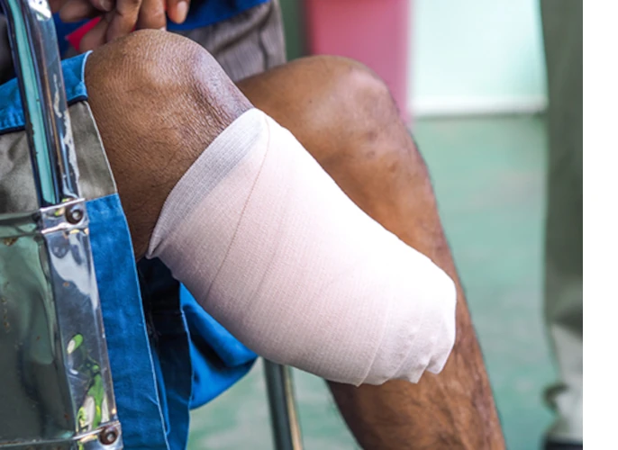

As you can see in the world around us mistakes are bound to happen, no matter what field you work in , due to either permanent limitations such as old age, changeable limitations such harrowing environments or lack of proper tools or mental health struggles. We at Weng.I (pronounced Vehng-uhl) saw this and decided to make sure these limits can be lessened and or removed so that humanity as a whole can improve, leading to change that will be for the better. To do this we plan to use AI to speed this along.
We decided to do to this because we saw the inovation that AI can bring through companies such as Chat gpt, DeepSeek etc, as we can use them to train our products so that whenever we give our products out to the public, we can make sure that all possible possibilities are accounted for so any new problems that do arise, can be adapted to and removed so that our customers can live their lives to the standard that they all humans deserve.
